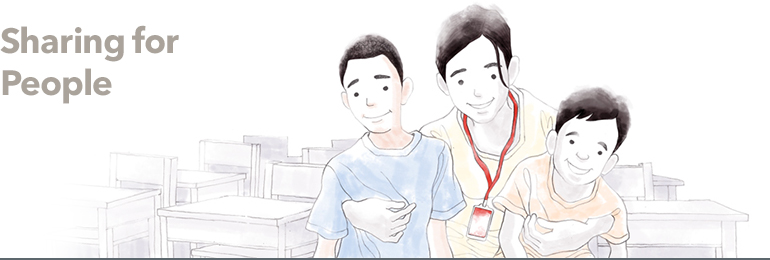
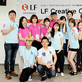
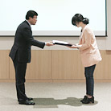
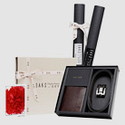
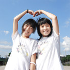

CSR
Sharing beyond boundaries of culture/arts/environmentLF defines sharing as love for people, society & culture, and nature. We are committed to carrying out sustainable CSR activities.


- LF CREATIVE FESTIVAL
- LF CREATIVE FESTIVAL, LF’s annual marketing/design contest for university students, is inviting all qualified students to join the contest and share their ideas.
The FESTIVAL, whose theme this year is “LOVE your FUTURE,” is a venue for LF officers and employees to communicate with university students. Unlike other contests, selected students are invited to a wide variety of programs after the presentation, such as a camping trip with LF officers and employees, and an overseas trip with team members. All these programs are designed to achieve a specific mission, and to allow both students and LF employees have a venue to share their experiences. The LF CREATIVE FESTIVAL hopes to evolve from a mere contest into a venue for young students and LF to stay connected.
http://lfcf.co.kr

- Dream Scholarship Committee
- Dream Scholarship Committee is a voluntary charity organization that gives hope to promising college students from underprivileged households.
The name of the committee has two meanings as “dream” in English means dream while in Korean it means “to give”. Around 100 LF employees participate in the committee.
The participants donate a certain amount every month since it began in September 2009 and the donations have been given to the students as scholarships through the Partners for the Future Foundation since 2011.

- Charity Project
- DAKS Accessories hosted two charity events to improve social skills and family orientation of children from broken homes.
The 1st charity event sold “celebrity bags” that were specially designed by celebrities while the 2nd charity event was cohosted by the leading Korean photographer, Kim Jung-man. Some of the proceeds from the event’s sales, under the names of celebrities and artists, went to businesses and projects that help children from broken homes. In particular, the “haneul (sky) bag” that was launched by actress Kim Ha-neul has sold more than 3,000 pieces in just a month, allowing the shoppers to feel included in sharing their love to those in need.
DAKS Accessories will continue supporting and sponsoring children from broken homes to increase their social skills and family orientation.

- Good buy Project
- TNGT has opened a pop-up store in cooperation with Good Neighbors, the international humanitarian and development NGO.
They encouraged spending by automatically donating KRW 2,000 per purchase to help children suffering in Africa.

- Water Nation
- Water Nation, which supports underprivileged children in Korea, held an exhibition at RAUM displaying Hunter original rain boots decorated with raindrop patterns that were drawn by 10 children under the sponsorship of Good Neighbors. Some of the proceeds from the sale of Hunter boots during the exhibition were donated to Good Neighbors. Hunter will continue supporting children from low-income families.